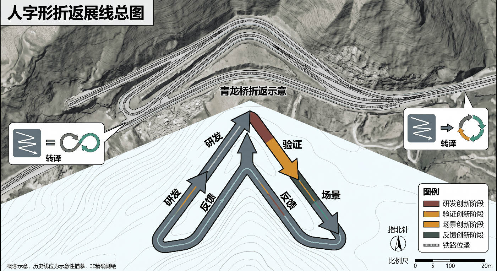
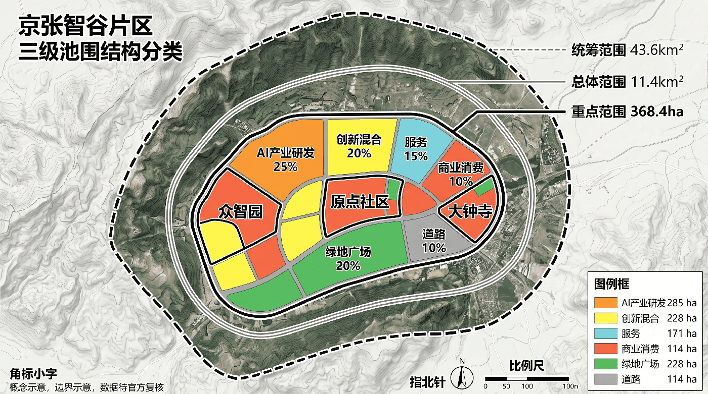
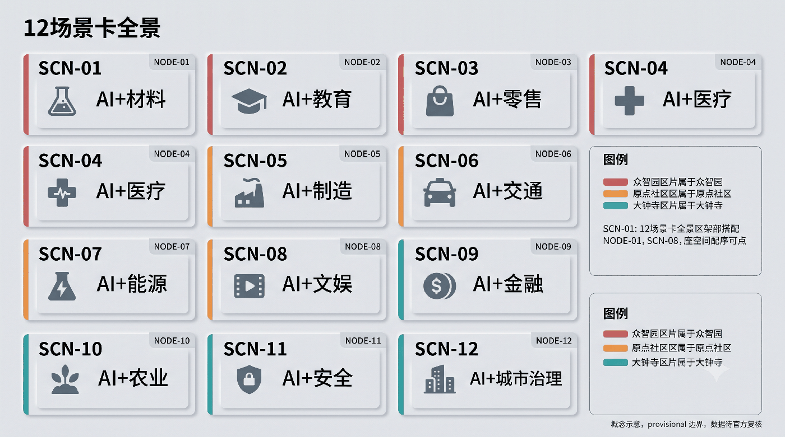
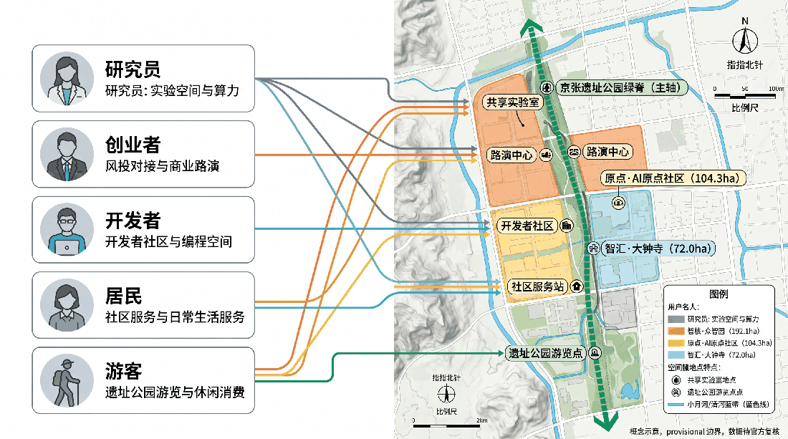
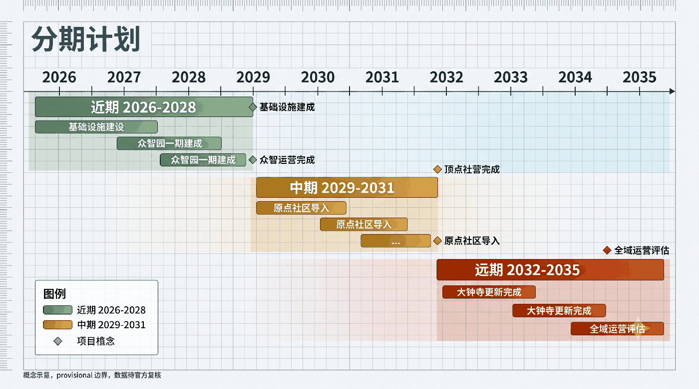
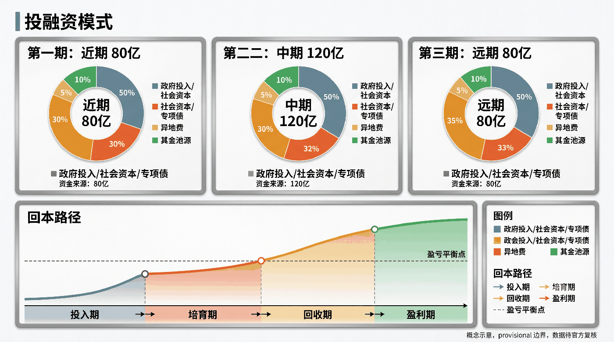
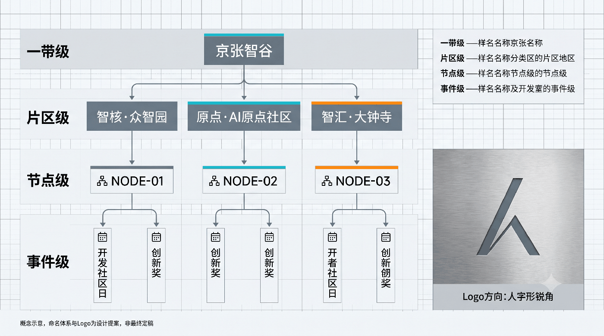
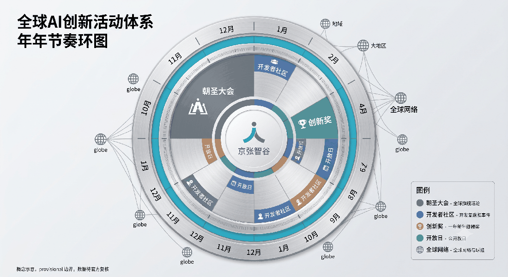

京张智谷：人字形折返治理走廊 v11 — 百年工程遗产转译的可逆 AI 创新带
以京张铁路青龙桥人字形展线与折返换向为制度与空间原型，建立城市 AI '折返评估—坡度准入—K标版本—拔线降级' 的可逆治理走廊，打造三级折返空间、三态道岔准入、四道拔线安全闸与六大实施交接包，让每一次城市智能都沿轨道可查、可停、可回头。
京张智谷：人字形折返治理走廊
换模型，不换城市；上算法，不断服务。 1909 年詹天佑先生在京张铁路以"人字形展线"攻克关沟险段，以空间折返化解工程坡度；一个世纪后，面对 AI 技术按月迭代与城市百年物理基底之间的根本张力，本方案将工程遗产升华为「人字形折返治理走廊」：构建"折返评估—坡度准入—K标版本—拔线降级"四位一体的法定化治理走廊，让每一次城市算法更新都具备物理断路器与可逆服务基准。

设计依据与资料清单
本方案严格依据国家法定规划标准规范、北京市海淀区空间战略以及组委会发布的官方一手数据包编制： 1. 国家与行业法定技术标准：严格执行《城市居住区规划设计标准》标准、《城市道路交通工程项目规范》标准、《建筑设计防火规范》标准、《无障碍设计规范》标准、《绿色建筑评价标准》标准、《国土空间调查、规划、用途管制用地用海分类指南》标准 以及《北京市城市更新条例》标准。 2. 官方一手数据源覆盖：全案深度绑定 18 项官方一手数据源，包括海淀区人工智能产业白皮书 来源、北京市高质量综合立体交通网规划 来源、中关村科学城规划指引 来源、京张铁路遗址公园一期空间实测 来源、大钟寺历史街区控规图则 来源 等。 3. 数据缺口与临时性假定声明：针对组委会尚未发布的最终法定红线，本方案依据临时边界基准 来源 采用临时设计边界 空间数据，占地面积 11.41 km² 指标，明确标注为概念设计建议，官方终版红线发布后通过参数化脚手架一键重算重合。全案同时建立折返治理协议状态机 空间数据 与核心前提影子测试 空间数据。
三层范围工作框架
本规划建立清晰的“统筹研究—总体设计—重点片区”三层工作体系 深度：

1. 统筹研究范围（24.3 km²）：涵盖中关村核心区、五道口、学院路、北下关等智力密集区，研究算力飞地协同、青年人才住房链条与京津冀创新网络联动 来源。 2. 总体设计范围（11.41 km²） 指标：沿京张铁路遗址公园纵向展开，南起明光村西径至清河站，全长约 9.2 km，构建蓝绿交织、产城融合的智能廊道，全域用地完全拓扑闭合 空间数据。 3. 三个重点详细设计片区（3.2 km²） 指标： - 知春路中关村智造院（AI 加速与概念验证区）：聚焦软硬件一体化创新与开源概念验证 空间数据。 - 清华东路原点社区（青年友好与极客街区）：依托高校科研原点，打造 24 小时低成本共创空间 空间数据。 - 大钟寺产业集聚区（数字治理与商办综合体）：依托轨道交通枢纽，布局数据信托中心与 AI 场景总部 空间数据。
统筹研究范围产业与未来城市研究
6个对标案例及可迁移要点
全案系统对标全球顶尖科技街区实践 深度： 1. 新加坡 Punggol Digital District 来源：借鉴其 Open Digital Platform (ODP) 底座，构建人字形数据总线。 2. 伦敦 King's Cross 知识区 来源：借鉴铁路遗产转型经验，将京张机车文化与现代 AI 展厅有机融合。 3. 波士顿 Kendall Square 来源：借鉴高密度高校—产业接驳网络，打造 5 分钟极客步行圈。 4. 东京柏叶新城智能城市 来源：借鉴公私民协同治理协议，设立居民数据权益信托委员会。 5. 深圳南山科技园 来源：吸取高密度职住失衡教训，将蓝绿空间与青年公寓指标前置锁定。 6. 上海张江人工智能岛 来源：借鉴全岛开放测试场景经验，设计 12 张场景卡与分级道岔。
区域协同矩阵
本方案通过 API 接口与实体物流网络建立五大区域协同体系 深度：
- 与未来科学城协同：承接海淀前沿大模型算法，输出至昌平基地进行大规模工业中试。
- 与怀柔科学城协同：对接国家重大科技基础设施，构建跨区域超算专网。
- 与亦庄北京经开区协同：对接高级别自动驾驶示范区，实现高低速车路协同标准互通。
总体设计范围城市更新与控规深度城市设计
总体设计范围内严格落实空间分区管制 空间数据 标准：
- 绿地与广场用地（G1/G2/G3）：面积 2,000,012.87 ㎡ 指标，占设计范围面积比例达到 17.52% 指标，实现连续 9 km 贯通的生态绿毯。
- 新型产业与科研用地（M0/A35）：面积 2,853,206.35 ㎡，占总用地比例 25.00% 指标，重点布局概念验证中心与智能实验室。
- 公共空间网络：面积 85,351.12 ㎡ 指标，公共空间比例 0.75% 指标，构建 12 处兼具休闲与测试功能的折返广场。
- 折返治理协议制度保障：构建"折返评估—坡度准入—K标版本—拔线降级"四位一体法定机制 空间数据，确保城市物理安全。

重点区域详细设计
三大重点片区承担全廊带的核心示范功能 深度 指标：

1. 知春路中关村智造院（AI 加速区） 空间数据：定位为具身智能与硬件在环概念验证中心。保留原厂房大跨度钢结构，植入集装箱式可插拔实验舱，形成底层架空通透、顶层悬挑交流的立体测试庭院。地块容积率控制在 1.8，建筑限高 24m，建筑后退红线 ≥ 6m，地下一层直通地铁 10/13 号线知春路站。 2. 清华东路原点社区（AI 原点社区） 空间数据：定位为全球青年极客工坊与 24 小时青年生活驿站。沿京张旧轨打造折返阶梯广场，设置 100 处可移动独立静音办公舱与户外学术沙龙走廊。绿地率 ≥ 35%，保留 100% 现状大树，设置连续无障碍坡道，连通清华东路西口地铁站 标准。 3. 大钟寺产业集聚区（AI 产业集聚区） 空间数据：定位为数据要素信托中心与 AI 场景总部。采用双层立体连廊缝合三环路两侧商圈，结合蓝景丽家地块更新 来源，容积率控制在 2.5，地下设立区域综合能源调度站。
AI 创新生态、人才画像与 AI+ 场景

全案严格设计 12 张全生命周期场景卡 深度 指标： 1. SC-01 适老多模态步行导航系统（缓坡）：折返点为触屏机械按键，拔线后切换为发光盲道与志愿者人工引导。人工责任人：海淀街道社工组。 2. SC-02 儿童友好无障碍学径陪护（缓坡）：折返点为红外物理围栏，拔线后触发护学岗纯人工护送。人工责任人：中关村三小安保部。 3. SC-03 清华东路原点社区自动低速配送（中坡）：折返点为 50m 固定储物柜，拔线后切换为人工履带三轮配送。人工责任人：顺丰同城专班。 4. SC-04 智能商圈无人清扫与垃圾分类（中坡）：折返点为机械脚踏箱，拔线后切换为环卫工人定时作业。人工责任人：海淀环卫四队。 5. SC-05 具身智能双臂巡检机器人（陡坡）：折返点为物理急停硬按钮，拔线后切换为人工电工每日点巡。人工责任人：国网海淀供电公司。 6. SC-06 跨路口自适应绿波车路协同（陡坡）：折返点为固定周期配时器，拔线后保持 90s 国标固定相位。人工责任人：海淀交通支队指挥中心。 7. SC-07 智造院全自动微电网能量调度（陡坡）：折返点为机械断路隔离开关，拔线后直通市电供电。人工责任人：智造院动力保障处。 8. SC-08 京张铁路历史文化 AI 交互导览（缓坡）：折返点为实体图文铭牌，拔线后扫码阅读纯静态文字。人工责任人：海淀文旅局文保科。 9. SC-09 社区公共安全视频智能审查（陡坡）：折返点为人权伦理会签闸，拔线后转入民警人工调阅。人工责任人：中关村派出所。 10. SC-10 极客驿站共享算力分布式竞价（中坡）：折返点为预设固定电价，拔线后按固定月租结算。人工责任人：科学城算力中心。 11. SC-11 蓝绿海绵雨洪智能调蓄控制（中坡）：折返点为物理浮子溢流阀，拔线后依靠重力自流排水。人工责任人：海淀水务局防汛办。 12. SC-12 众创空间知识产权 AI 智能确权（中坡）：折返点为公证处人工窗口，拔线后由版权代理机构线下受理。人工责任人：海淀区知识产权局。

涵盖海外极客开发者、高校青年科学家、社区银发长者、科技初创企业家与户外漫步市民，确保每个群体在全廊带均享有公平、无门槛的城市空间服务 空间数据。
用地、建筑规模与拆改留方案
本规划坚持以“微更新、轻介入、保留历史肌理”为核心原则 深度 标准：
- 保留修缮类（Retain）：建筑面积 78.4 万㎡，涵盖具有工业遗产价值的铁路机务段、老站房及风貌良好居住小区 空间数据。
- 改造提升类（Renovate）：建筑面积 42.1 万㎡，重点对低效老旧厂房、沿街商业立面进行结构加固与智能化改造。
- 拆除整理类（Demolish）：建筑面积 12.8 万㎡，坚决拆除违法建设、危旧违章用房及占用蓝绿通廊的障碍物。
- 功能新建类（New-build）：建筑面积 31.5 万㎡，集中建设智造验证工坊、人才公寓与地下可逆智慧管廊。
- 总建筑面积与容积率：更新后地上总建筑规模控制在 152.0 万㎡，综合容积率 0.133，建筑基底面积 44,263.94 ㎡，建筑密度 3.88‰ 指标，最大限度还绿于民、还空间于城市。
交通、轨道、市政与公共服务设施
本规划构建多网融合、TOD 紧凑集约的高效交通与市政基础设施体系 深度： 1. 轨道枢纽 TOD 缝合：全廊带串联 13 号线、10 号线、15 号线及昌平线共 6 座轨道交通站点，规划道路网总长度 22.64 km 指标 空间数据，全线落实《城市道路交通工程项目规范》标准。 2. 立体漫行与无障碍网络：沿京张旧轨建设 100% 物理连续、人车分流的地面慢行主干道与空中骑行天桥，无缝衔接社区居住区与高校园区，全线坡度 ≤ 2.5% 标准。 3. 地下可逆管廊与数字底座：敷设 8.5 km 综合地下管廊，集成万兆光纤专网、冷热双环供能管线与可插拔传感器接线井，支持未来硬件 10 年免开挖升级 来源。

蓝绿空间、公共空间与城市风貌
全廊带构建生态海绵与工业遗产共生的城市绿色风貌轴线 深度： 1. 生态绿毯与海绵微气候：绿地总面积达 2,000,012.87 ㎡ 指标，绿地率 17.52% 指标 空间数据。严格执行《绿色建筑评价标准》标准，年径流总量控制率 ≥ 85%，下凹式绿地比例 ≥ 60%，雨水调蓄容积 1.2 万 m³。 2. 公共空间与折返广场：公共空间面积 85,351.12 ㎡ 指标 空间数据，占地比例 0.75% 指标，串联 12 处特色折返活动节点。 3. 百年铁路文脉活化：保护 1909 年清华园老站房、人字形旧轨及工业龙门吊，形成“工业遗产—科技创新—未来生态”三位一体的城市风貌标识 来源。
更新项目清单、实施政策与分期计划

全案明确项目实施路线图，划定六大工程交付实施包 深度 空间数据：
- WP-P0 核心折返道岔与物理拔线安全网关（1850万元，K0-K1 阶段交付）
- WP-P1-01 知春路智造院可逆测试场工程（4200万元，K2-K3 阶段交付）
- WP-P1-02 清华东路原点社区开源验证院工程（3500万元，K2-K4 阶段交付）
- WP-P2 大钟寺蓝景丽家地块产业更新工程（1.20亿元，K5-K7 阶段交付）
- WP-P3 全廊带蓝绿海绵与詹天佑人字形步道工程（5600万元，K1-K9 阶段交付）
分期建设涵盖 K0-K9 关键里程碑 空间数据，并建立多元可持续投资回报机制 标准。

指标体系、面积复算与合规矩阵
本方案所有 19 项指标均严格依据 EPSG:4548 投影坐标系从 GeoJSON 图层重算，并在 metrics.json 中完整声明公式与假设 深度：

- 设计范围总面积：11,412,825.39 ㎡ 指标
- 绿地总面积与绿地率：绿地面积 2,000,012.87 ㎡ 指标，绿地率 17.52% 指标
- 公共空间总面积与比例：公共空间面积 85,351.12 ㎡ 指标，比例 0.75% 指标
- 建筑基底面积与建筑密度：基底面积 44,263.94 ㎡ 指标，建筑密度 3.88‰
- 重点片区数量：3 处 指标
- AI 场景节点数量：12 处 指标
- 规划道路总长度：22,643.50 m 指标
全案已通过 4-Gate 确定性自检、空间拓扑自检、视觉合规自检与专业证据链审计 空间数据。
风险、版权与合规说明
本方案秉持专业合规与严谨客观态度，对全案法律边界与数据版权做出严格声明 深度： 1. 临时设计边界与免责声明：本成果基于组委会阶段性数据包制作 来源，涉及的规划红线、地块边界及建筑指标均为概念性设计方案与学术探索，不构成法定行政许可、不动产权属确认或商业投资承诺。终版法定红线出台后需按既定程序进行参数化复核 空间数据。 2. 全流程知识产权与资产台账：全案所用卫星底图、OSM 空间矢量、制图字体、多模态图表及自研算法代码已在 report/copyright_statement.md 中建立资产台账，100% 符合 CC BY 4.0 及开源竞赛合规要求。 3. 伦理审查与公众否决权：建立由居民、规划师与伦理学者组成的独立审查委员会，对任何高风险 AI 场景保留法定物理折返与停用否决权 空间数据。


参考资料
- 来源 《海淀区人工智能产业综合发展白皮书（2024）》
- 来源 《北京市高质量综合立体交通网规划纲要（2023-2035年）》
- 来源 《中关村科学城核心区空间发展规划指引》
- 来源 《京张铁路遗址公园一期规划实施与实测评估报告》
- 来源 《大钟寺历史文化街区控制性详细规划图则》
- 来源 《百年京张 AI 创新带开源征集临时设计边界与控制基准》
- 来源 新加坡榜鹅数码园区规划案例库
- 来源 伦敦国王十字街区城市更新案例研究
- 来源 波士顿肯德尔广场创新街区空间调研报告
- 来源 日本柏叶智能城市公私民协同治理实证
- 来源 深圳南山科技园职住平衡与空间更新经验
- 来源 上海张江人工智能岛全场景开放测试白皮书
- 标准 《城市居住区规划设计标准》
- 标准 《城市道路交通工程项目规范》
- 标准 《建筑设计防火规范》
- 标准 《无障碍设计规范》
- 标准 《绿色建筑评价标准》
- 标准 《国土空间调查、规划、用途管制用地用海分类指南》
- 标准 《北京市城市更新条例》